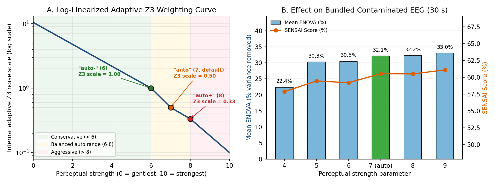
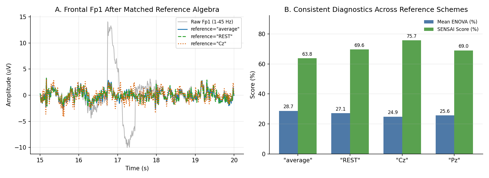
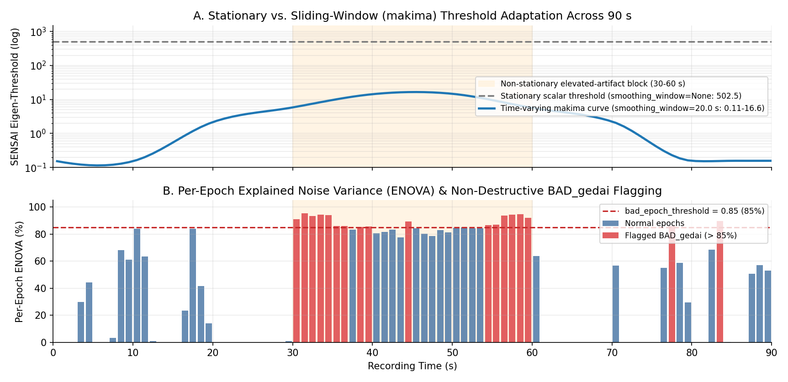
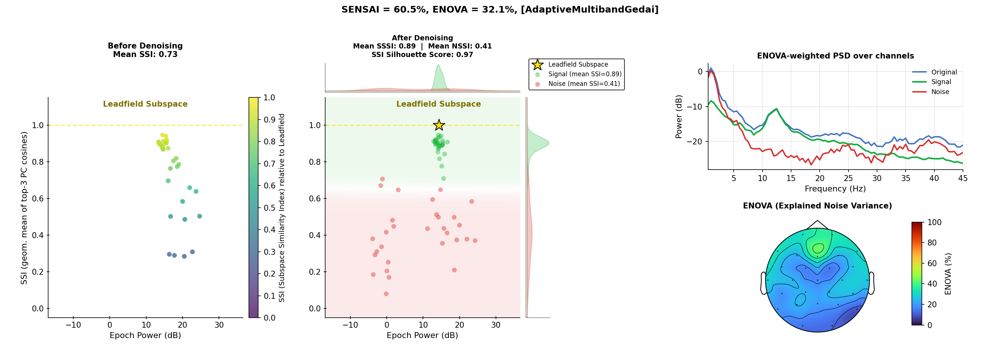

FAQ & Hyperparameter Guide🔗
This guide explains when and why to adjust each GEDAI hyperparameter by recording type and analysis goal. For full parameter signatures and return types, see the API Reference.
Quick-Start Recipes by Experiment Type🔗
For most datasets, default parameters work out of the box. Override only the parameters relevant to your experimental setup:
Use Case |
Recommended Settings |
Why It Matters |
|---|---|---|
General offline EEG / MEG |
|
Cycle-adaptive wavelets allocate longer windows to slow bands while
|
Pre-stimulus ERPs (CNV, RP, LPP) |
|
Disables internal wavelet high-pass filtering (global channel mean centering only) for zero acausal baseline leakage across stimulus onset. |
Resting EEG with heavy slow sweat / movement drift |
|
Applies sub-cutoff pre-filtering and zeroes spectral bands up to
|
Long non-stationary recordings (sleep, epilepsy, fatigue) |
|
Adapts GEVD/SENSAI thresholds smoothly across state transitions via
overlapping calibration windows and Akima ( |
Clinical / BIDS labels, custom 3D montages, or individual MRI |
Keep |
Matches BIDS/EDF/legacy labels safely, falls back automatically to 3D dipole-kernel projection for non-10-20 channels, or uses subject anatomy. |
Specific EEG reference scheme |
|
Re-references both the EEG signal and reference covariance identically before subspace fitting and restoration. |
Low-latency online / real-time streaming |
|
Fixed-window Haar decomposition pairs with sliding WOLA buffering and skips post-hoc ENOVA/SENSAI scoring in tight streaming loops. |
High-density EEG or MEG / OPM arrays |
Set |
Guarantees full-rank covariances via |
Choosing a Model Class🔗
AdaptiveMultibandGedai(recommended offline default): Adjusts epoch duration per wavelet band usingcycles_per_waveletso slow oscillations (delta/theta) span enough cycles for stable covariance estimates while fast bands remain short and localized. Supports continuousRawdata.MultibandGedai: Uses a fixeddurationacross all Haar MODWT wavelet levels. Required for pre-epoched data (fit_epochs/transform_epochs) when using multiband cleaning, or when mirroring fixed-window streaming pipelines.Gedai: Single broadband GEVD spatial filter. Fastest to fit, ideal for teaching, quick inspection, or spatially stationary broadband artifacts.
Denoising Strength & SENSAI Optimization🔗
strength ("auto" default; 0-10 perceptual scale)🔗
Controls the balance between artifact suppression and neural signal preservation in the SENSAI objective (higher = stronger cleaning), matching MATLAB GEDAI’s log-linearized adaptive Z3 spectral weighting curve:
strength="auto"(default, equivalent to7.0): Balanced adaptive Z3 denoising computed in closed form from GEVD spectral invariants (scale0.5) while automatically protecting rank-1 and rank-2 dipolar cortical activity on EEG.strength="auto-"(equivalent to6.0): Conservative adaptive Z3 denoising (scale1.0). Useful for clean recordings or subtle ERP components where preserving weak cortical variance is paramount.strength="auto+"(equivalent to8.0): Aggressive adaptive Z3 denoising (scale1/3). Useful for heavily contaminated muscle/motion or clinical datasets where residual artifacts persist under"auto".Any float or int in
[0, 10](e.g.,strength=7.5orstrength=9.0): Continuously tunes rejection strength smoothly across0.0(gentlest cleaning) up to10.0(maximum cleaning).


Left: Perceptual strength (0-10) mapped to the internal
closed-form adaptive Z3 noise weighting scale, highlighting
"auto-" (6), "auto" (7, default), and "auto+"
(8). Right: Monotonic effect on Mean ENOVA (%) and SENSAI
score over 30 s of the bundled contaminated EEG.🔗
sensai_method ("optimize" default) & sensai_tol (0.1)🔗
sensai_method="optimize"(default): Uses continuous bounded scalar minimization (fast, smooth threshold selection).sensai_method="gridsearch": Exhaustively evaluates a discrete threshold grid oversensai_bounds(default(-6.0, 12.0)onGedai). Useful mainly for diagnostic score curves or verifying non-convex multi-modal landscapes.sensai_tol(default0.1): Convergence tolerance (xatol) for"optimize". Lower to e.g.0.01if fine threshold reproducibility is more important than fit speed.
Spatial Prior & Head Model🔗
reference_cov ("leadfield" default)🔗
Defines the spatial topography of valid neural brain sources:
"leadfield"(default): Loads GEDAI’s bundled 343-channelfsaverageOpenMEEG BEM leadfield covariance. Channel matching strips BIDS/EDF/BioSemi prefixes/suffixes safely (e.g.,"EEG Fp1-REF","C3-M2", and legacy 10-20 aliasesT3/T4/T5/T6). If any channel is non-10-20 (e.g.,"E1"or"EEG 001") and valid 3D coordinates are present ininfo, GEDAI automatically uses 3D cortical dipole-kernel projection."projection": Forces explicit 3D dipole-kernel projection viacompute_covariance_from_dipole_projection()andproject_leadfield_dipole()from digitized 3D channel locations, even if standard 10-20 names are present.mne.Forward: Pass an individual subject MRI forward model (or pre-built BEM/MEG forward). GEDAI computes the covariance viacompute_covariance_from_forward()with matching EEG referencing. Always prefer this for non-standard infant heads, surgical cohorts, or custom MEG/OPM sensor geometries.mne.Covariance: Pass any custom empirical or synthetic spatial prior covariance directly.
n_pc ("auto" default)🔗
Number of leading eigenvectors retained when scoring SENSAI subspace similarity:
For EEG: Resolves automatically to
3(rank-normalized 3D volumetric dipolar basis).For MEG: Prescans the GEVD eigenvalue spectrum to pick
2or3components automatically depending on room-noise harmonics vs. dipolar bursts. Override with an integer only when benchmarking custom priors.
EEG Referencing🔗
reference ("average" default; ignored for MEG)🔗
GEDAI applies the exact same reference algebra to both the EEG time series and the leadfield/reference covariance so spatial subspaces stay consistent:
"average"(default): Common average reference (recommended for most standard workflows and source-informed priors)."REST": Reference Electrode Standardization Technique (infinity reference). Requires a physical leadfield ormne.Forward. Ideal for functional connectivity, scalp topography amplitude accuracy, or sparse asymmetric caps.Linked mastoids / earlobes or single electrode: Pass
"M1+M2","TP9+TP10","A1+A2", or any electrode name (e.g.,"Cz"). Supports external 10-05 references not recorded in the EEG data channels as well as in-montage electrodes."none": Disables re-referencing inside GEDAI. Use only if your pipeline already applied a specialized reference and you supply an identically referenced custom covariance (or callcompute_covariance_from_forward()withreference=None).
Note
Flat recording reference protection & noisy reference fallback: When
bad_channel_threshold is active and your online recording reference
channel (e.g., "Cz") is still in the montage as all zeros (0 uV),
passing reference="Cz" protects it from being dropped as a broken flat
channel (recorded in flat_reference_channels_). Conversely, if a chosen
reference electrode (e.g., M1 in "M1+M2") is detected as noisy, GEDAI
logs a warning and falls back safely to "average".


Because GEDAI transforms both the EEG data and leadfield covariance with
identical linear reference algebra, frontal blink removal (left) and
overall SENSAI / ENOVA metrics (right) remain consistent across
"average", "REST", "Cz", and "Pz" schemes.🔗
Bad Channels & Bad Epochs🔗
on_bad_channel ("exclude" default) & bad_channel_threshold (None)🔗
on_bad_channel="exclude"(default): Respects channels marked ininst.info["bads"], excluding them from spatial decomposition and average referencing, and raises an error if a fitted channel is later marked bad at transform time. Pass"ignore"only to retain legacy pre-0.7.0 behavior.bad_channel_threshold: Enables MATLAB-style automatic two-pass detection. A pre-pass detects broken flat channels and Pass 1 fits GEDAI to identify channels whose per-channel ENOVA exceeds the threshold ("auto"uses0.95, or pass a float in(0, 1]); Pass 2 then refits cleanly on the remaining good channels. Recommended for unattended batch pipelines.interpolate_bads(Falsedefault ontransform_raw/transform_epochs): Set toTrueto reconstruct excluded bad channels with MNE spherical spline interpolation and re-apply EEG referencing on the restored montage (requires valid 3D channel locations).
bad_epoch_threshold (None default)🔗
Set e.g. bad_epoch_threshold=0.85 on transform_raw or
transform_epochs to flag residual extreme-ENOVA 1-second windows (where more
than 85% of variance had to be removed, typically mechanical cap hits or wire
pops). On Raw, GEDAI non-destructively adds "BAD_gedai" MNE annotations
and populates boolean bad_epochs_ without deleting samples.
reject_by_annotation (False default)🔗
Keep this False during fit_raw. Because GEDAI is an unsupervised noise
subspace learner, it needs to observe representative blinks, EMG bursts, and
electrode pops in order to isolate and subtract them accurately.
Wavelet Bands & Window Geometry🔗
wavelet_low_cutoff (0.1 default)🔗
Controls both low-frequency pre-filtering on Raw and spectral subband
exclusion on MultibandGedai and
AdaptiveMultibandGedai (on Gedai,
highpass_prefilter=0.1 plays the corresponding role):
0.1(default): Applies a 0.1 Hz Haar wavelet high-pass pre-filter before broadband estimation while keeping the 0.1-0.5 Hz scaling band spatially cleaned. Best general-purpose choice.0.0orNone: Applies global channel mean centering only (no wavelet high-pass filtering) and cleans all bands down to DC. Essential for slow cortical potentials and anticipatory ERPs (CNV, Readiness Potential, LPP) or when a causal filter was already applied upstream.>= 0.5(e.g.,0.5): Stronger slow-drift pre-filtering; subbands with upper frequency bound<= wavelet_low_cutoffare zeroed out. Useful for severely drifting eyes-open/motion resting-state EEG."auto": Readsraw.info["highpass"]and resolves tomax(0.1, raw.info["highpass"]).
wavelet_level ("auto"), cycles_per_wavelet (10), broadband_pass (True)🔗
wavelet_level="auto"(default): Automatically selects decomposition depth based onsfreqso wavelet detail bands span physiological rhythms down to0.5 Hz.cycles_per_wavelet(default10onAdaptiveMultibandGedai): Targets at least N cycles per wavelet band’s lower cutoff frequency when choosing adaptive calibration epoch durations. Increase slightly (e.g.,12) when clean stationary segments are plentiful; decrease (e.g.,6-8) on very short recordings.broadband_pass=True(default): Runs a fast initial broadband GEDAI pass before multiband fitting to prevent giant transient jumps from skewing band-level GEVD decompositions. KeepTrueoffline; setFalsefor single-stage low-latency streaming or specialized synthetic tests.
duration (1.0 s) & overlap (0.5)🔗
duration: Calibration and transform epoch length (in seconds) forGedaiandMultibandGedai. Note that GEDAI automatically enforces at leastk * n_channelssamples per covariance window (defaultk = 1.0, configurable via environment variableGEDAI_CHANNEL_MULTIPLIER) so high-density arrays never suffer rank-deficient covariance matrices.overlap(default0.5): Fractional overlap (in[0, 1)) between consecutive cosine-tapered dual-stream windows. Increase to0.75only if you observe boundary discontinuities during heavy burst transitions.
Non-Stationary Long Recordings🔗
smoothing_window (None default on fit_raw)🔗
Use smoothing_window for long recordings with non-stationary background
EEG signal (such as full-night sleep architecture shifts, epilepsy
ictal/interictal transitions, fatigue / drowsiness blocks, or multi-hour
ICU/neurofeedback sessions):
Noneornp.inf(default): Fits a single stationary threshold across the entire recording (best when recording state and noise characteristics are roughly stable, or when transferring a fitted model to new sessions).Positive float in seconds (e.g.,
30.0or60.0): Divides the recording into 50% overlapping calibration windows of lengthsmoothing_window, solves local SENSAI and adaptive Z3 thresholds per window, and interpolates a smooth per-epoch threshold curve across time using modified Akima (makima) interpolation.
Note
When transform_raw is called on the fitted recording, it applies the full
time-varying curve (stored internally in _fit["threshold_curve"]). If you
later apply the model to a recording with a different epoch count, GEDAI logs
a message and falls back cleanly to the median scalar threshold.


Top: Stationary scalar threshold (smoothing_window=None) vs.
time-varying modified Akima (makima) threshold curve
(smoothing_window=20.0 s) adapting across a heavy 30-60 s artifact
block (log scale). Bottom: Per-epoch ENOVA (%) with
bad_epoch_threshold=0.85 non-destructively flagging extreme burst
windows as BAD_gedai epochs.🔗
Compute Performance, Units & Quality Diagnostics🔗
engine ("auto"), n_jobs (None), & compute_metrics (True)🔗
engine="auto"(default): Uses vectorized PyTorch CPU linear algebra whenevertorchis installed, and falls back to NumPy otherwise (producing mathematically equivalent results). Override with"numpy"or"torch"only for benchmarking or reproducibility checks.n_jobs: Parallel workers across bands/grid steps (None/1serial;-1uses all CPU cores). Prefern_jobs=1withengine="torch"because PyTorch already multi-threads internally and avoids joblib worker overhead.compute_metrics(defaultTrue): Populatesmetrics_(ENOVAper epoch/channel,mean_enova, compositesensai_score) after transform. Setcompute_metrics=Falsein low-latency real-time loops.
Amplitude Units & Interpreting Goodness-of-Fit Metrics🔗
Amplitude scale invariance: MNE-Python uses SI units (Volts for EEG, Tesla or Tesla/m for MEG), and GEDAI trace-matches the reference covariance to the data so cleaning results are invariant to uniform unit scaling (Volts vs. microvolts).
ENOVA (
metrics_["mean_enova"]): Fraction of signal variance removed as noise (0%= untouched, higher on noisy segments; near0-10%on clean resting EEG).SENSAI goodness-of-fit (
fit_metrics_["sensai_score"]&plot_sensai): Checks whether retained brain data match the chosen spatial prior (SSSI/ssi_after_mean, high -> neural patterns preserved) while removed noise diverges from it (NSSI/ssi_noise_mean, low -> artifacts cleanly separated). Useplot_sensaiwhenever evaluating a custom head model or unusual montage.


Default 3-column output of plot_sensai on 30 s of contaminated EEG:
raw (left) and separated Signal/Noise (middle) in Subspace Similarity
Index (SSI) vs. Epoch Power space, ENOVA-weighted Welch PSD (top right),
and per-channel ENOVA scalp topography (bottom right).🔗